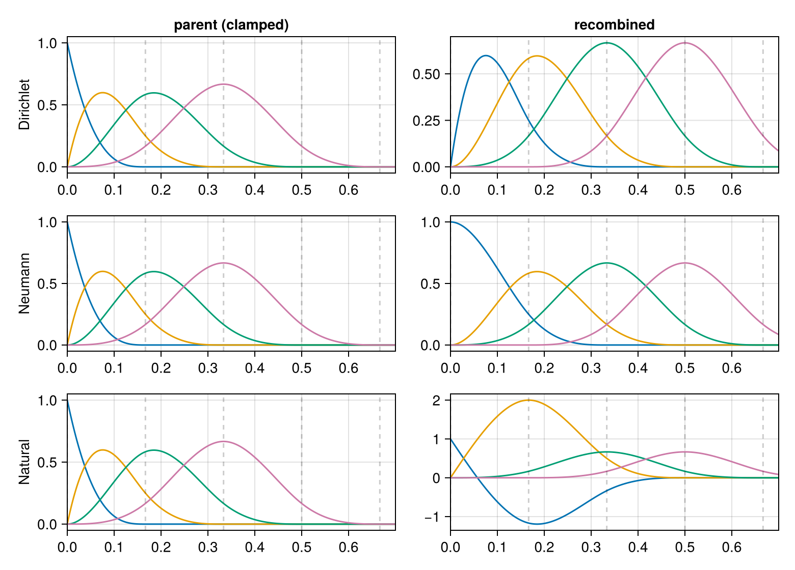

Boundary Conditions
Two quite different things go by the name boundary condition, and separating them is what makes the general case tractable.
using SimpleSplines
using CairoMakie
using LinearAlgebra
using Random
Random.seed!(1234)Two kinds of closure
How the knot vector is closed fixes the spline space and its dimension. There are two choices, and they are different constructions rather than variants of one:
Freerepeats each end knot $p+1$ times — the clamped knot vector — giving $N = n + p$ and a basis that is interpolatory at the ends.Periodiccontinues the breakpoints periodically and wraps the basis onto the torus, giving $N = n$.
Periodicity is not a per-end setting. It identifies the two ends, so it applies to a whole axis or not at all; there is no such thing as being periodic at the left end only, and boundary_conditions rejects the attempt.
A homogeneous linear constraint at one end is something else: a condition on the clamped space. Dirichlet is $u = 0$, Neumann is $u' = 0$, Natural is $u'' = 0$, Robin is $\alpha u + \beta u' = 0$, and Constraint is the general
\[L u \big\vert_{\text{end}} = 0 , \qquad L = \sum_{k=0}^{m} c_k \, D^k , \qquad c_m \ne 0 ,\]
of order $m$. These are imposed by recombination, and each one costs exactly one degree of freedom at the end it applies to.
All seven are subtypes of BoundaryCondition, and all of them are given their meaning in one place — constraint_coefficients, which returns the $(c_0, c_1, \dots)$ above — so that the recombination has a single implementation rather than one method per condition.
[(bc, constraint_coefficients(bc), constraint_order(bc), nconstraints(bc))
for bc in (Free(), Periodic(), Dirichlet(), Neumann(), Natural(),
Robin(2.0, 3.0), Constraint(1, 0, -2))]7-element Vector{Tuple{BoundaryCondition, Any, Int64, Int64}}:
(Free(), nothing, -1, 0)
(Periodic(), nothing, -1, 0)
(Dirichlet(), (1,), 0, 1)
(Neumann(), (0, 1), 1, 1)
(Natural(), (0, 0, 1), 2, 1)
(Robin(2.0, 3.0), (2.0, 3.0), 1, 1)
(Constraint(1, 0, -2), (1, 0, -2), 2, 1)Recombination
Take a clamped basis $\varphi_1, \dots, \varphi_{N_p}$ of degree $p$ and a condition of order $m$ at the left end $a$. Put
\[a_i = (L \varphi_i)(a) .\]
A clamped knot vector has $D^k \varphi_i(a) = 0$ for $i > k+1$, so only the first $m+1$ functions can violate the condition, and of those only $\varphi_{m+1}$ contributes to
\[a_{m+1} = c_m \, D^m \varphi_{m+1}(a) ,\]
which is nonzero whenever the leading coefficient $c_m$ is. The $m$ combinations
\[\psi_t = \varphi_t - \frac{a_t}{a_{m+1}} \, \varphi_{m+1} , \qquad t = 1, \dots, m ,\]
are annihilated by $L$ by construction, and $\varphi_{m+2}, \varphi_{m+3}, \dots$ pass through unchanged because they already satisfy the condition. The right end is the mirror image, anchored on $\varphi_{N_p - m}$.
The accounting. $m+1$ functions go in and $m$ come out, so a constrained end costs one degree of freedom whatever the order of its condition. That is worth stating separately from the disjointness requirement, because the two are easy to conflate: Natural() reaches three functions and removes one.
- $m = 0$ (
Dirichlet): there are no combinations at all and $\varphi_1$ is simply dropped — the textbook elimination. - $m = 1$ (
Neumann): one genuine combination of $\varphi_1$ and $\varphi_2$. - $m = 2$ (
Natural): $\varphi_1$ and $\varphi_2$ already have vanishing second derivative at $a$ and pass through; $\varphi_3$ is the one that goes.
The transformation is stored as a sparse matrix $R$ with $\psi_j = \sum_i R_{ij} \varphi_i$, of size $N_p \times N$, available as recombination_matrix:
bclamped = BSplineBasis(UniformMesh(6, 0 .. 1), 3)
b = BSplineBasis(UniformMesh(6, 0 .. 1), 3, Neumann())
R = recombination_matrix(b)
size(R), nbasis(bclamped), nbasis(b)((9, 7), 9, 7)Matrix(R)[1:4, 1:3]4×3 Matrix{Float64}:
1.0 0.0 0.0
1.0 0.0 0.0
0.0 1.0 0.0
0.0 0.0 1.0The first column is $\psi_1 = \varphi_1 - (a_1/a_2)\varphi_2$, and here $a_1/a_2 = -1$: the two end derivatives of a clamped basis are $\mp p/h$, so the Neumann combination is $\varphi_1 + \varphi_2$. That the anchor coefficient is itself often exactly $1$ is why the construction records which parent row each column carries with unit coefficient rather than searching a column for the value $1$.
What the recombined functions look like, against the parent functions they are built from:
xs = range(0, 1; length = 801)
fig = Figure(size = (780, 560))
for (row, bc) in enumerate((Dirichlet(), Neumann(), Natural()))
br = BSplineBasis(UniformMesh(6, 0 .. 1), 3, bc)
ax1 = Axis(fig[row, 1]; ylabel = string(nameof(typeof(bc))),
title = row == 1 ? "parent (clamped)" : "")
for j in 1:4
lines!(ax1, xs, [evaluate(bclamped, j, x) for x in xs])
end
ax2 = Axis(fig[row, 2]; title = row == 1 ? "recombined" : "")
for j in 1:4
lines!(ax2, xs, [evaluate(br, j, x) for x in xs])
end
for ax in (ax1, ax2)
xlims!(ax, 0, 0.7)
vlines!(ax, breakpoints(bclamped); color = (:black, 0.2), linestyle = :dash)
end
end
fig
The Dirichlet basis is the parent's with $\varphi_1$ removed; the Neumann one has a first function with a horizontal tangent at $x = 0$; the Natural one has a first function whose curvature vanishes there.
[(nameof(typeof(bc)),
evaluate(BSplineBasis(UniformMesh(6, 0 .. 1), 3, bc), 1, 0.0, d))
for (bc, d) in ((Dirichlet(), 0), (Neumann(), 1), (Natural(), 2))]3-element Vector{Tuple{Symbol, Float64}}:
(:Dirichlet, 0.0)
(:Neumann, 0.0)
(:Natural, 0.0)Each is zero to round-off, and — the point of doing it this way — it is zero for every coefficient vector, because the condition holds function by function:
bd = BSplineBasis(UniformMesh(6, 0 .. 1), 3, Dirichlet())
û = randn(nbasis(bd))
evaluate(bd, û, 0.0), evaluate(bd, û, 1.0)(0.0, 0.0)Every assembly is the parent's, conjugated
Because $\psi_j = \sum_i R_{ij} \varphi_i$ is linear, every bilinear form on the recombined basis is the parent's form conjugated by $R$:
\[\tilde{\mathbb{M}} = R^{\mathsf T} \mathbb{M} R , \qquad \tilde{\Phi} = R^{\mathsf T} \Phi , \qquad \tilde{A}_{a,b} = R^{\mathsf T} A_{a,b} R .\]
This is why SplineQuadrature needs no separate implementation for the recombined case, and it is checked rather than assumed:
q = SplineQuadrature(bd)
qp = SplineQuadrature(parent(bd))
Rd = recombination_matrix(bd)
maximum(abs, Matrix(mass_matrix(q)) - Matrix(Rd' * mass_matrix(qp) * Rd))0.0$R$ has at most two nonzeros per column, so $R^{\mathsf T} \mathbb{M} R$ is still banded with half-bandwidth $p$ up to the end blocks, and the mass matrix stays symmetric positive definite. Every solve is therefore unaffected, which is the practical reason to prefer recombination to the alternatives:
| approach | banding | dimension |
|---|---|---|
| recombination | preserved | $N$ = the constrained dimension |
| row/column elimination | preserved, but only for $u = 0$ | same |
| Lagrange multipliers | destroyed — a dense saddle-point block | $N_p + \#$ constraints |
| penalty | preserved, but the condition holds only approximately and conditioning degrades | $N_p$ |
Basis recombination as a general device for imposing boundary conditions on a spectral or spline basis is discussed by Boyd [8]; the spline case is treated in [4].
What is lost
Two properties the clamped basis has are not guaranteed to survive recombination, and which of them actually goes depends on the condition. Measured, on cubics over six cells:
xs2 = range(0, 1; length = 401)
for bc in (Free(), Dirichlet(), Neumann(), Natural(), Robin(1.5, -0.7))
br = BSplineBasis(UniformMesh(6, 0 .. 1), 3, bc)
least = minimum(evaluate(br, j, x) for j in eachindex(br), x in xs2)
defect = maximum(abs, [sum(evaluate(br, j, x) for j in eachindex(br)) - 1
for x in xs2])
println(rpad(nameof(typeof(bc)), 11), " min ψ = ", rpad(round(least; digits = 4), 9),
" |Σψ - 1| = ", defect)
endFree min ψ = 0.0 |Σψ - 1| = 3.3306690738754696e-16
Dirichlet min ψ = 0.0 |Σψ - 1| = 1.0
Neumann min ψ = 0.0 |Σψ - 1| = 3.3306690738754696e-16
Natural min ψ = -1.193 |Σψ - 1| = 6.661338147750939e-16
Robin min ψ = 0.0 |Σψ - 1| = 0.07121651785714289The partition of unity survives exactly when the condition annihilates the constants, that is when $c_0 = 0$. The reason is a row sum: $\sum_j \psi_j = \sum_i (\sum_j R_{ij}) \varphi_i$, and the anchor row contributes $-\sum_{t \le m} a_t / a_{m+1}$, which equals one precisely when $\sum_i a_i = (L\mathbb{1})(a) = c_0$ vanishes. So Neumann and Natural keep it, while Dirichlet loses it outright — the defect is $1$, since every function vanishes at the ends and the constant is simply not in the space — and a Robin condition with $\alpha \ne 0$ loses it partially.
Non-negativity can go whichever way. $\psi_t = \varphi_t - (a_t/a_{m+1})\varphi_{m+1}$ is a difference, so nothing guarantees it, and above it is Natural that loses it while Dirichlet, Neumann and that particular Robin happen to keep it. A scheme that needs a projected density to stay non-negative should check rather than assume.
The consequence is not cosmetic. A conservation law survives a discretisation only if the conserved density lies in the span of the basis, and polynomial_reproduction is the number that says which do:
\[\text{polynomial\_reproduction} = \min_{\text{ends}} \big( \text{order of the lowest derivative the condition involves} \big) - 1 ,\]
with an unconstrained end contributing $p$. The derivation is short: the recombined space is the parent space intersected with the two conditions, and in the local coordinate $x - a$ one has $D^k u(a) = k!\, b_k$, so $L = \sum_k c_k D^k$ reads off the coefficients $b_0, \dots, b_m$ one at a time and annihilates the whole of $\mathbb{P}_m$ exactly when $c_0 = \dots = c_m = 0$.
| condition | lowest derivative in $L$ | polynomial_reproduction |
|---|---|---|
Free | — | $p$ |
Periodic | — | $0$ — the constants only, since $x$ is not periodic |
Dirichlet | $u$ | $-1$ |
Neumann, Robin(0, β) | $u'$ | $0$ |
Natural | $u''$ | $1$ |
Robin(α, β) with $\alpha \ne 0$ | $u$ | $-1$ |
Constraint(0, 0, 0, 1) | $u'''$ | $2$ |
a pair (left, right) | — | the minimum of the two ends |
m = UniformMesh(8, 0 .. 1)
[(bc, polynomial_reproduction(BSplineBasis(m, 4, bc)))
for bc in (Free(), Periodic(), Dirichlet(), Neumann(), Natural(),
Robin(1.0, 1.0), Robin(0.0, 1.0), Constraint(0, 0, 0, 1),
(Dirichlet(), Neumann()))]9-element Vector{Tuple{Any, Int64}}:
(Free(), 4)
(Periodic(), 0)
(Dirichlet(), -1)
(Neumann(), 0)
(Natural(), 1)
(Robin(1.0, 1.0), -1)
(Robin(0.0, 1.0), 0)
(Constraint(0, 0, 0, 1), 2)
((Dirichlet(), Neumann()), -1)Two entries there are worth a second look. Robin(1.0, 1.0) reproduces nothing — $-1$, the same as Dirichlet — because what matters is the lowest derivative the condition involves, and a Robin condition with $\alpha \ne 0$ involves $u$ itself: no non-zero constant satisfies $u + u' = 0$ at an endpoint. And Robin(0.0, 1.0) is Neumann in disguise, so it keeps the constants; the named type is preferable where it applies, since it says what is meant and Dirichlet in addition takes the cheaper elimination path.
Choosing Dirichlet because the solution happens to decay at the edge of the domain removes the constants from the span, and with them the conservation of mass. The decay is a property of the solution; imposing it on the space is a different and much stronger statement. A scheme whose conservation proof needs $1$, $v$ and $v^2$ in the span needs polynomial_reproduction(b) ≥ 2, and can assert it.
The periodic alternative
Where the geometry allows it, the periodic closure gives up nothing at the boundary because there is no boundary. Every basis function spans $p+1$ cells, the basis is $\mathcal{C}^{p-1}$ across the seam $a \equiv b$ as well as inside, and integration by parts over $\Omega$ leaves no boundary terms. That last point is what makes derivative_matrix exactly antisymmetric on a periodic mesh:
\[\int_\Omega \partial_x (\phi_k \phi_l) \, \mathrm{d}x = 0 \quad \Longrightarrow \quad S_{kl} + S_{lk} = 0 .\]
qper = SplineQuadrature(BSplineBasis(UniformMesh(16, 0 .. 2π), 3, Periodic()))
S = derivative_matrix(qper)
maximum(abs, S + S')6.661338147750939e-16On a clamped basis the same integral is $[\phi_k \phi_l]_a^b$, which does not vanish, and $S$ is not antisymmetric:
qcl = SplineQuadrature(BSplineBasis(UniformMesh(16, 0 .. 2π), 3))
maximum(abs, derivative_matrix(qcl) + derivative_matrix(qcl)')1.0000000000000004What the periodic closure costs is polynomial reproduction beyond the constants.
Two things a condition cannot be
Nonlocal. Every condition here involves the solution at one endpoint only, which is what keeps $R$ sparse and the mass matrix banded. A multi-point or integral condition — $u(a) = u(b)$ other than through Periodic, or $\int_\Omega u = 0$ — would need the nullspace of a dense constraint matrix, and the banding that every assembly here relies on would be gone. This is deliberately out of scope.
Of order higher than the degree. A condition involving $D^k$ with $k > p$ constrains nothing, since the $k$-th derivative of a degree-$p$ spline vanishes identically. That is reported rather than silently accepted:
try
BSplineBasis(UniformMesh(8, 0 .. 1), 1, Natural())
catch err
err
endArgumentError("the left boundary condition involves D^2, but every derivative above order 1 of a degree-1 spline vanishes identically, so the condition constrains nothing")A caveat on ill-scaled Robin conditions
The recombination anchors each end block on $\varphi_{m+1}$, the only one of the $m+1$ candidates that contributes to $a_{m+1} = c_m D^m \varphi_{m+1}(a)$. That anchor is nonzero whenever the leading coefficient $c_m$ is — but how nonzero is the caller's business, not the construction's.
Robin(1.0, 1e-20) puts a vanishing coefficient on the highest derivative. The anchor is then numerically zero and the recombination coefficients $-a_t / a_{m+1}$ become huge, and the failure is silent in an unpleasant way: the mass matrix comes out finite with a condition number already Inf, cholesky(…; check = false) reports success on it anyway, and the projection that follows looks plausible. Prefer the named type where one applies — Robin(1.0, 0.0) is Dirichlet and Robin(0.0, 1.0) is Neumann — and keep the two coefficients of a genuine Robin condition within a few orders of magnitude of each other.